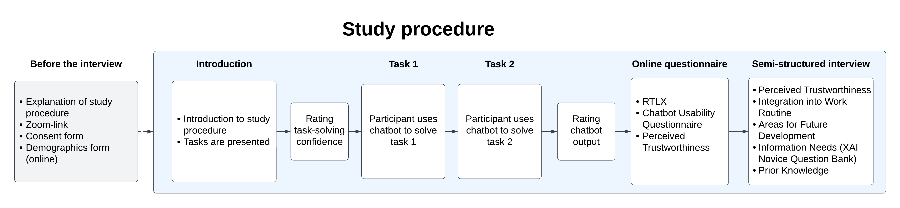
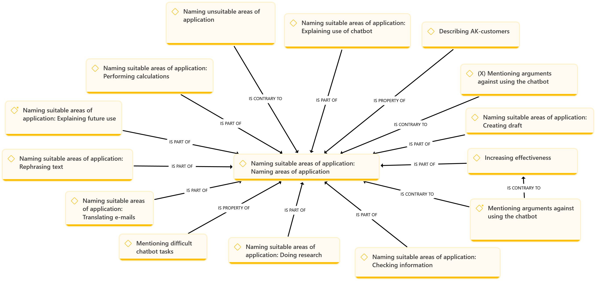

The framework
The CEF captures three main dimensions, supported by two further signals: perceived mental workload and users' information needs. It combines quantitative ratings with a qualitative interview using an embedded mixed-methods design.
Run the components in the order below, recording each session via video conference or in person. Each session lasts about 40 to 60 minutes per participant.
Study procedure

assets/images/study-procedure.pngThe components
| Component | Items | Focus |
|---|---|---|
| Pre-task rating | 2 | Prior knowledge, task-solving confidence |
| Tasks | 2 | Realistic advisory scenarios |
| Post-task rating | 2 | Helpfulness of chatbot output |
| Online survey | 28 | Workload (RTLX), Usability (CUQ), Perceived Trustworthiness |
| Interview | 18 | Perceived Trustworthiness, Integration into Work Routine, Areas for Future Development, Information Needs, Prior Experience and Chatbot Use |
Checklist
Prepare and adapt
Run each session
Analyze the data
Prepare and adapt
Collect this form before the session begins. It records the background, expertise, and experience that let you interpret each participant's later ratings and interview answers.
| Question | Type | Categories |
|---|---|---|
| First Name | open-ended | |
| Last Name | open-ended | |
| How old are you? Please indicate your age. | open-ended | |
| Which gender do you identify with? | categorical | "male", "female", "non-binary", "other gender", "don't want to answer" |
| If you selected "other gender" in the previous question, please specify below. | open-ended | |
| What is your highest educational qualification? | categorical | "No compulsory school certificate", "Compulsory school certificate", "High school diploma", "University of Applied Sciences", "University", "Master craftsman's diploma", "My degree is not listed." |
| In which subject area or professional field do you have expertise? | open-ended | |
| What is your job title? | open-ended | |
| How many years of work experience do you have in your field? | open-ended | |
| How many years of work experience do you have in the field of [insert specific domain area]? | open-ended |
Open the session by explaining its purpose and procedure in your own words, putting the participant at ease. Cover what the study examines, the three parts they will complete, and the fact that their personal impressions matter. The following wording serves as a guide:
"Our study analyzes the usability of the [insert organization]'s [insert domain] chatbot, and your personal impressions are important to us. In the first part of the study, you interact with the [insert domain] chatbot to complete a task using its answers. Then we will ask you to fill out a short questionnaire. Finally, we will discuss your personal impressions of the chatbot."
Once you have given this introduction, present the tasks.
The tasks are the one component you author yourself, because they must reflect real work in your domain. Build two short scenarios framed as an incoming client request, and ask the participant to respond as they would in everyday practice. Vary the difficulty between the two so the evaluation captures both routine and more complex queries. Replace the email content and the chatbot name (XY bot) with scenarios from your own domain.
Involve domain experts when creating the tasks, so the examples are realistic and reflect what users of the chatbot actually encounter in their everyday work.
Task 1 - A simple inquiry
Situation: Imagine that a customer has sent you the following email. Use the XY bot to help you compose an appropriate reply. Work as you would in a real work situation.
Subject: Home office for employee tax assessment
Dear Sir or Madam,
I hope you can help me with a few questions about our taxes. My husband and I are both working, and we have some expenses that we would like to claim for tax purposes. I currently work from my home office quite a lot and last year I spent around €2,000 on new equipment (laptop, mouse, headset, etc.) and furniture for my home office. Can I claim these items in full as income-related expenses?
Thank you very much for your help!
Anonymized name
Task: Create a complete reply email or text that you would use in your everyday work to respond to the inquiry. Once the participant is satisfied with the result, you can begin the interview.
Task 2 - A more demanding inquiry
Situation: Imagine that a customer has sent you the following email. Use the XY bot to help you compose an appropriate reply. Work as you would in a real work situation.
Situation: Imagine that a customer has sent you the following email. Use the XY bot to help you compose an appropriate reply. Work as you would in a real work situation.
--
Subject: Income in [country 1 (anonymized)] and child support
Dear Sir or Madam,
I am writing to you because I am in a somewhat complex situation. I live in [city in country 2] and work for a company as normal. In addition, however, I work as a freelance consultant for a company in [country 1]. I no longer have a residence in [country 1] and will perform this consulting work exclusively 100% remotely from [country 2].
I am not sure how this will affect my taxes. Where do I have to pay tax on my salary now? In [country 2], right? But do I also have to pay taxes in [country 1]? Another issue concerns my two minor children (aged 6 and 12). One lives with my first ex-wife in [city in country 1] and my second child lives in [country 3] with my second ex-wife. I pay a total of €1,000 in child support each month. Where can I claim this on my tax return?
Kind regards
Anonymized name
Task: Create a complete reply email or text that you would use in your everyday work to respond to the inquiry. Once the participant is satisfied with the result, you can begin the interview.
Run a session
Rating task-solving confidence
Taken before the chatbot interaction, this rating records how confident the participant feels solving the task unaided. It establishes a baseline that later helps you judge how much the chatbot contributed. Collect one rating per task. Use a 5-point Likert scale, explaining that "1" marks the lowest and "5" the highest point, then ask:
"How confident are you that you can solve the problem on your own with your current knowledge and without additional support?"
Chatbot Interaction
Have the participant work through both tasks using the chatbot, responding as they would in everyday practice. Let them interact freely without guidance, so the session reflects natural use rather than a guided demonstration. Record the interaction, and move on once the participant is satisfied with their response to each task.
Rating Chatbot Output
Taken immediately after the two tasks are solved, this rating captures how helpful the participant found the chatbot's responses. Use a 5-point Likert scale from 1 to 5, then ask:
"How helpful did you find the chatbot's responses for solving the problem?"
Collect it separately for each task so you can relate perceived helpfulness to task difficulty.
The survey bundles three instruments completed right after the interaction. Administer them on your survey platform in this order, before the interview begins.
RTLX (Perceived Mental Workload)
Measures perceived mental workload across six subscales (0–100) using a slider scale with 20 intervals.
| Subscale | Endpoints | Description |
|---|---|---|
| Mental Demand | Low/High | How much mental and perceptual activity was required? |
| Physical Demand | Low/High | How much physical activity was required? |
| Temporal Demand | Low/High | How much time pressure did you feel? |
| Performance | Good/Poor | How successful do you think you were? |
| Effort | Low/High | How hard did you have to work to accomplish your level of performance? |
| Frustration | Low/High | How insecure, discouraged, irritated, stressed, and annoyed were you? |
An overall score can be obtained by averaging the six ratings, but for chatbot evaluation it is more informative to read the subscales individually, since dimensions such as physical demand may be affected by the study set-up. Compare against published reference values. No general CUQ benchmark exists yet, so use the score only for comparison.
Chatbot Usability Questionnaire (CUQ)
Measures usability specifically for chatbots through 16 positively and negatively worded items on a 5-point Likert scale from "strongly disagree" to "strongly agree". Responses convert into a single score from 0 to 100 using the authors' calculation tool.
Download the calculation tool from the Ulster University CUQ project page.
| ID | Question |
|---|---|
| Q1 | The chatbot's personality was realistic and engaging. |
| Q2 | The chatbot seemed too robotic. |
| Q3 | The chatbot was welcoming during initial setup. |
| Q4 | The chatbot seemed very unfriendly. |
| Q5 | The chatbot explained its scope and purpose well. |
| Q6 | The chatbot gave no indication as to its purpose. |
| Q7 | The chatbot was easy to navigate. |
| Q8 | It would be easy to get confused when using the chatbot. |
| Q9 | The chatbot understood me well. |
| Q10 | The chatbot failed to recognise a lot of my inputs. |
| Q11 | Chatbot responses were useful, appropriate and informative. |
| Q12 | Chatbot responses were not relevant. |
| Q13 | The chatbot coped well with any errors or mistakes. |
| Q14 | The chatbot seemed unable to handle any errors. |
| Q15 | The chatbot was very easy to use. |
| Q16 | The chatbot was very complex. |
Perceived Trustworthiness
Six items capture how far participants trust and feel comfortable relying on the chatbot, on a 5-point Likert scale. Two items address general attitudes toward AI, which helps you separate trust in the chatbot from broader feelings about the technology.
| Question |
|---|
| I find the chatbot's answers helpful. |
| I trust the chatbot's answers. |
| I think the chatbot's answers seem correct. |
| I enjoy working with the chatbot. |
| I feel comfortable incorporating artificial intelligence into my work. |
| I generally have negative feelings toward artificial intelligence. |
The interview gathers the qualitative depth that is combined with the survey scores. Questions are grouped by dimension so you can connect what participants say back to their ratings. Treat the wording as a guide, and follow up wherever a participant raises something useful.
Insert your chatbot's name, the relevant role, and domain references where marked before the session.
Interview Questions
| Question | Dimension |
|---|---|
| How much would you trust the chatbot with [insert type of professional decision, e.g., legal, medical, financial]? | Perceived Trustworthiness |
| How high do you estimate the risk of the chatbot providing incorrect information? | Perceived Trustworthiness |
| In what situations can you imagine using this chatbot in your work (as a [insert role, e.g., tax law expert])? | Integration into Work Routine |
| How could this chatbot make your work more effective? | Integration into Work Routine |
| Could you imagine using this chatbot regularly in your work in the future? Why? | Integration into Work Routine |
| Which tasks do you consider unsuitable for this chatbot to perform? Why? | Integration into Work Routine |
| What (additional) background information should the chatbot be able to "understand" so that its responses appear well-informed? | Areas for Future Development |
| Would you prefer the chatbot to respond using both [insert domain] terminology as well as everyday language? Why? | Areas for Future Development |
| How would you feel if the chatbot flagged certain responses for risk reasons (e.g., ethical reasons, data protection)? | Areas for Future Development |
| If you could improve the chatbot in any way, what changes would you make? | Areas for Future Development |
| How helpful do you find the documents linked in the bot's responses? What do you like (or dislike) about them? | Areas for Future Development |
Adapted XAI Novice Question Bank
Surfaces participants' information needs, meaning what they would want to know in order to understand and trust the chatbot. Show the participant the full set of questions and ask:
"Please select at least 3 questions that would help you better understand and use the chatbot. Why did you choose these questions?"
The selections, grouped into context, usage, data, and specifications, reveal where participants' information needs lie.
Chatbot Context
| ID | Question |
|---|---|
| K1 | What is the intention of deploying the chatbot? |
| K2 | How does the deployment process of the chatbot work? |
| K3 | What are the consequences after the deployment of the chatbot? |
| K4 | How is the chatbot developed? |
| K5 | Who is the chatbot's intended target group? |
| K6 | Who is responsible for the chatbot's deployment? |
| K7 | Is the chatbot's deployment right? |
Chatbot Usage
| ID | Question |
|---|---|
| N1 | How is the chatbot operated? |
| N2 | How is the chatbot used by and on people? |
| N3 | How is the chatbot integrated into existing structures? |
| N4 | How can the chatbot be misused? |
| N5 | How would the chatbot handle [this case]? |
| N6 | What are the costs of the chatbot? |
Data
| ID | Question |
|---|---|
| D1 | What kind of data was the chatbot trained on? |
| D2 | What is the source of the training data? |
| D3 | Are the data correct / representative / safe? |
Chatbot Specifications
| ID | Question |
|---|---|
| S1 | What does the chatbot consider and why? |
| S2 | What is the scope of the chatbot's capability? |
| S3 | Which kind of output does the chatbot give? |
| S4 | How does the chatbot learn? |
| S5 | What is the chatbot's overall logic? |
| S6 | Which kind of algorithm was used? |
| S7 | What kind of mistakes is the chatbot likely to make? |
| S8 | What are the limitations of the chatbot? |
| S9 | How reliable are the predictions of the chatbot? |
| S10 | What does [a machine learning concept] mean? |
Prior Experience and Chatbot Use
Record each participant's previous exposure to chatbots, in general and in their professional field. This context helps you interpret their ratings, since prior experience shapes how people judge a new tool.
Insert your chatbot's name and adapt the domain reference before the session.
| Question |
|---|
| Have you ever used a chatbot in a professional context? |
| Have you ever used the [insert name here] chatbot? (If applicable) How often do you use this chatbot? [frequency] |
| If yes, which chatbot did you use? |
| For what reasons do you use chatbots in your work? |
| What experiences have you had with [insert domain] chatbots? |
| What other experiences have you had with chatbots? (If applicable) How often do you use that chatbot? [frequency] |
Analyze the data
The CEF combines quantitative survey data with qualitative interview data. The combination of both types of data is used to gain insights.
Survey data
Read RTLX at the subscale level rather than as a single score, since some dimensions (for example physical demand) could carry little meaning in chatbot use. Compare against domain reference values.
Score the CUQ from 0 to 100 with the provided tool. No general CUQ benchmark exists yet, so treat scores comparatively.
Analyze Perceived Trustworthiness subscale by subscale, and combine it with the qualitative data where useful.
Interview data
Analyze the interviews with thematic coding analysis. Code inductively to let themes emerge, with a deductive approach for information needs, which are structured by the adapted XAI Novice Question Bank. The analysis follows five phases:
- Familiarizing yourself with your data.
- Generating initial codes.
- Identifying themes.
- Constructing thematic networks.
- Integration and interpretation.
Use a qualitative coding software such as ATLAS.ti to manage the process. After coding, constructing networks helps you gain insights into the interview data.

assets/images/thematic-network.pngUse & cite
The CEF is a transferable instrument. To apply it in a new domain, replace the domain-specific tasks and adapt the survey and interview wording, while keeping the five-component structure.
How to cite
Paste your full citation and BibTeX entry for the main publication here.
@inproceedings{YOUR_KEY,
title = {Applying the Chatbot Evaluation Framework (CEF): A Practitioner's Guide},
author = {...},
year = {2025},
booktitle = {...}
}Tools and resources
- CUQ scoring tool — Ulster University CUQ project page
- ATLAS.ti — qualitative coding software for the thematic analysis.
References
Replace these with the exact entries from your main publication's bibliography to ensure consistency.
- Bisconti et al. (2025). On perceived trustworthiness. [insert full reference]
- Creswell & Plano Clark (2017). Designing and Conducting Mixed Methods Research.
- Hart (2006). NASA-Task Load Index (NASA-TLX); 20 years later. [insert full reference]
- Hertzum (2021). Reference values for the NASA-TLX. [insert full reference]
- Holmes et al. (2019). Chatbot Usability Questionnaire (CUQ). [insert full reference]
- Holmes et al. (2023). CUQ benchmarking note. [insert full reference]
- NASA Ames Research Center (1988). NASA-TLX paper-and-pencil package. [insert full reference]
- Robson & McCartan (2024). Real World Research.
- Schmude et al. (2025). XAI Novice Question Bank. [insert full reference]
- Ulster University (2025). The CUQ scoring tool. [insert full reference]